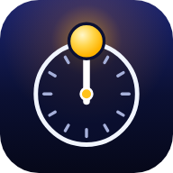

Parallax 2.0 & ALT 327K 2.0
Two apps for Earth and Gaia. Each one installs on its own and keeps working with no connection.

Parallax 2.0
A live world clock, with a sandbox for any offset, saved clocks and custom zones.
ALT 327K 2.0
An altitude sandbox: what the air does to you at any height, and who lives up there.
Put one on your home screen
Open the app you want first, then install it from there. Do it once for each app.
iPhone or iPad
- Open the app in Safari.
- Tap Share.
- Tap Add to Home Screen.
Android
- Open the app in Chrome.
- Tap the three-dot menu.
- Tap Add to Home screen, then Install.
Computer
- Open the app in Chrome or Edge.
- Click the install icon at the right end of the address bar.
- Click Install.
Clocks and zones you save in Parallax 2.0 stay on the device you saved them on.